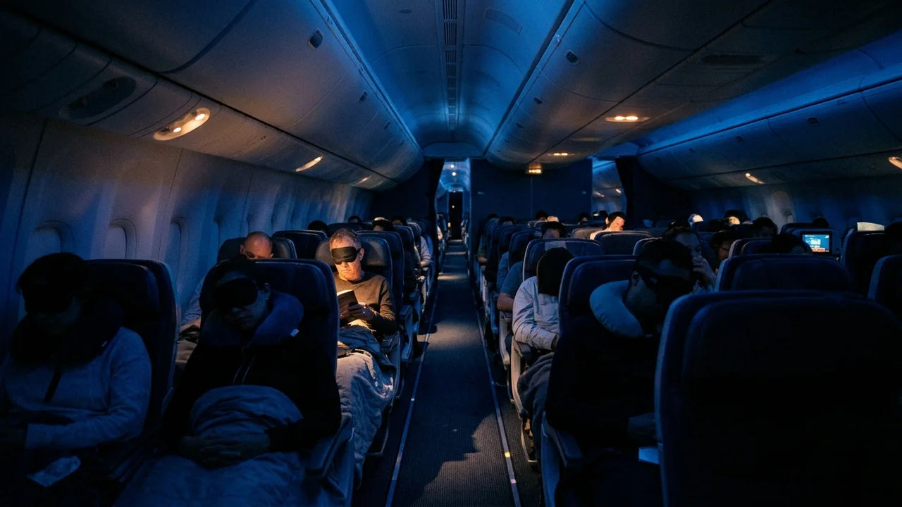
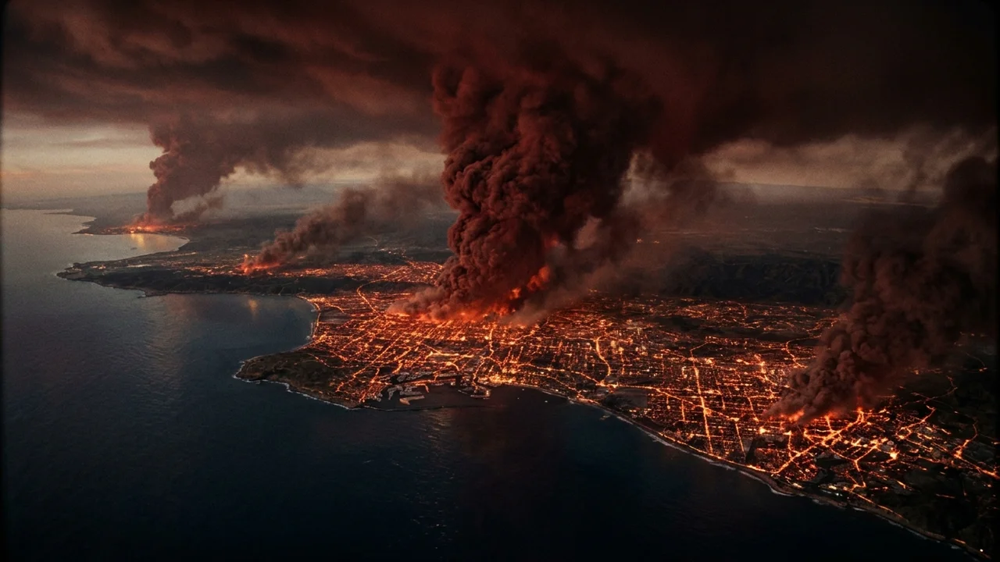
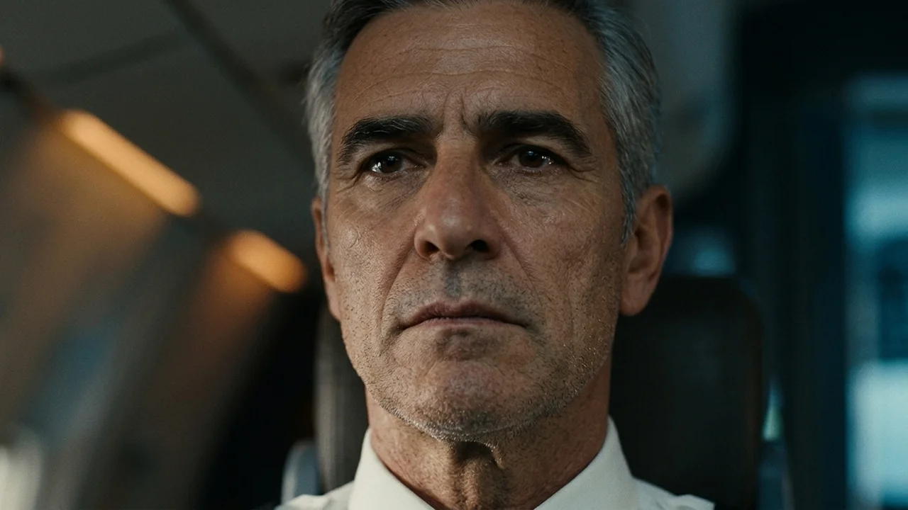
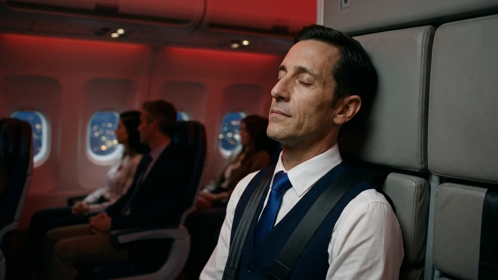
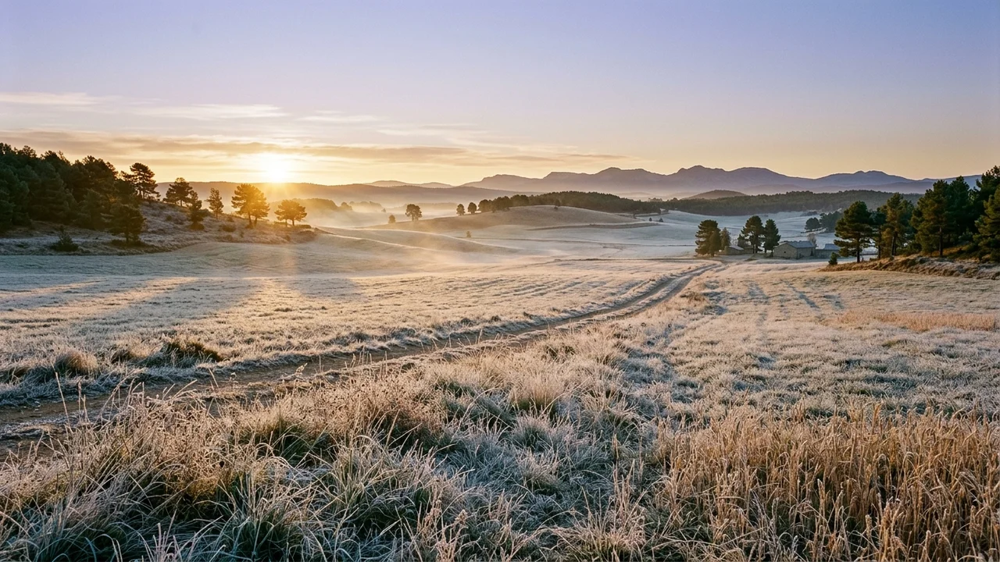

El zumbido regular de los dos turbofanes envolvía la cabina del Boeing 777 como una marea sorda. A diez mil seiscientos metros de altitud, sobre la vertical del Atlántico norte, el vuelo comercial ochocientos cuarenta y dos avanzaba cortando una noche cerrada y sin luna. En el pasaje, la luz ambiental atenuada en un tono azul cobalto apenas dejaba ver las siluetas de los doscientos catorce viajeros: cabezas vencidas sobre almohadillas, el brillo tembloroso de pantallas individuales y el rumor del aire acondicionado renovando la atmósfera a través de las toberas del techo.
En la bodega inferior de carga, oculta bajo las planchas del suelo, una válvula de sellado en un contenedor industrial había cedido al poco del despegue. El cilindro, registrado por error burocrático como reactivo textil inerte, albergaba en realidad un compuesto organofosforado: un gas incoloro, sin olor y de densidad similar al aire, concebido para pruebas militares de anulación neurológica. La fuga ascendía arrastrada por los conductos de recirculación, mezclándose con el flujo que alimentaba el pasaje y la cabina de mando.
En la cabina de vuelo, el comandante Daniel Soria descansaba los antebrazos sobre los mandos en reposo del piloto automático. La pantalla meteorológica mostraba una ruta despejada. A su derecha, la primera oficial Valeria Costa revisaba el consumo en la tableta de navegación.
—Llevamos dos toneladas de queroseno sobre el plan —dijo ella, pasándose el dorso de la mano por la frente—. Llegaremos a Madrid con margen holgado.
Daniel asintió, aunque un cosquilleo caliente detrás de la nariz le hizo pestañear. Bebió un sorbo de café. El líquido tibio le supo metálico, como si hubiera chupado una moneda de cobre.
—¿Notas calor, Valeria? —preguntó, aflojándose la corbata con dos dedos.
—Un poco. El panel marca veintiún grados, pero siento las mejillas ardiendo. Le pediré a Javier que baje la climatización.
Antes de tocar el interfono, un repiqueteo de advertencia sonó en la consola frontal. En el indicador del motor derecho, la aguja de temperatura comenzó a trepar de manera irregular, saltando de seiscientos a novecientos grados en pocos segundos.

En ese mismo instante, el horizonte exterior pareció encenderse como una mecha en la oscuridad.
Valeria se inclinó hacia el parabrisas delantero. A través del cristal calefactado, la negrura del océano se había roto. Una grieta de color escarlata, ancha como una cordillera sumergida, rasgaba la superficie marina hacia el sur. De la fisura no brotaba lava densa, sino un resplandor furioso, un naranja incandescente que se propagaba a una velocidad inverosímil, como si el agua salada hubiera entrado en combustión viva.
—Daniel… mira abajo —susurró la copiloto con la voz quebrada.
El comandante apoyó las manos en el salpicadero. Sus pupilas, dilatadas por la hipoxia química que empezaba a enturbiar su riego cerebral, registraron una visión demencial: las costas ibéricas y el norte africano ardían en un oleaje de ascuas colosales. Las ciudades brillaban como brasas desparramadas en el fondo de una chimenea. Donde debían descansar las luces de Lisboa y Oporto, una masa de fuego ciego proyectaba columnas de humo carmesí hacia la alta atmósfera.
—No puede ser —murmuró Daniel—. No es un incendio. Es la corteza entera. Toda la tierra está hirviendo.
En el pasaje, la anomalía desató los primeros gritos. Javier Beltrán empujaba el carrito de bebidas cuando un viajero junto a la ventanilla izquierda saltó de su asiento, apartándose del cristal como si quemara.
—¡Miren afuera! ¡Por Dios, miren afuera!
Decenas de persianas subieron al unísono. La claridad que inundó el interior del avión tiñó de rojo los rostros pálidos de los pasajeros. Al asomarse, la gente creyó ver continentes desgarrándose en una tormenta ígnea. El mar burbujeaba en tonos cobrizos y despedía nubes de vapor rojizo que envolvían la noche.
El gas neurotóxico, acumulado ya en concentraciones críticas en la sangre de todos a bordo, actuaba con precisión fatal. Al bloquear los receptores colinérgicos y privar al lóbulo occipital de oxígeno, el cerebro rellenaba el vacío con las pesadillas que los demás exclamaban en voz alta. La alucinación se volvió colectiva: un contagio psíquico alimentado por la falta de aire y el espanto compartido.

Una mujer en la fila quince se arrodilló en el pasillo, apretando un rosario de madera contra el pecho.
—¡Es el juicio del fuego! —sollozaba—. ¡La Tierra entera se está consumiendo!
Javier intentó avanzar para calmarla, pero las piernas le pesaban como si anduviera por brea hirviendo. Una repentina oleada de euforia, típica de la intoxicación avanzada, le provocó un mareo que tomó por una extraña revelación. Se aferró a los respaldos y miró por el óvalo de la ventanilla. Bajo el avión, el planeta parecía fundido en una caldera de hierro candente. Los valles, las carreteras y las ciudades: todo era un océano de llamas puras.
En la cabina técnica, Valeria accionó el selector de la radio con dedos temblorosos.
—Mayday, Mayday, Mayday. Vuelo ochocientos cuarenta y dos. Madrid Control, Lisboa Radar, cualquier estación, responda. Superficie en ignición global. Solicitamos vectores de emergencia.
Por los altavoces no respondió ningún controlador. El canal emitió un chirrido estático lacerante, sobre el que brotaron frases rotas y apagadas por el ruido blanco:
«…tres mil grados en Barajas… pistas fundidas… evacuen… Dios tenga piedad…»
Las transmisiones no salían de ninguna antena terrestre: eran ruidos de estática que las mentes intoxicadas de los pilotos descifraban como las últimas palabras de la especie.

Valeria soltó los auriculares sobre la consola con un gesto de amargura infinita.
—Nadie responde, Daniel. No queda nadie abajo. Las torres, los pueblos… todo es ceniza. No hay dónde posar el tren.
Daniel observó los paneles de instrumentos. Los números de navegación fluctuaban y se deshacían en destellos coloreados por la lesión de su nervio óptico. Sentía la garganta reseca y la lengua pegada al paladar como un trozo de cuero.
—Si bajamos a diez mil pies, la radiación térmica nos fundirá las alas antes de tocar suelo —dijo el comandante con una serenidad glacial—. Tenemos combustible para cuatro horas a potencia mínima. Aguantaremos en el aire mientras los motores respiren. Somos los últimos seres vivos, Valeria.
El interfono de cabina sonó con dos pulsos sordos. Daniel activó el manos libres.
—Comandante… —la voz de Javier sonaba lejana, teñida de una paz espectral—. En el pasaje lo saben. Lo están viendo por las ventanillas. Ya nadie grita. Se están despidiendo. Familias abrazadas, desconocidos dándose la mano. Si este es el desenlace… ha sido un orgullo volar con ustedes.
Daniel cerró los párpados. Dos lágrimas calientes le surcaron las mejillas, enfriándole la piel encendida.
—Gracias, Javier. Mantén la calma allí atrás. Nadie sufrirá las llamas antes de tiempo.

Las horas siguientes transcurrieron en una vigilia fantasmal. El avión trazaba amplios círculos elípticos a diez mil metros, con las palancas de gases reducidas al límite de la sustentación. Afuera, la distorsión perceptiva mantenía su espectáculo atroz: oleadas de resplandor escarlata, columnas de humo imaginario y continentes deshaciéndose en brasas.
En el pasillo, los viajeros habían enmudecido. El efecto tóxico del gas sumado a la hipoxia severa inducía una fase final de placidez y desapego. Decenas de pasajeros garabateaban notas de despedida con bolígrafos agotados en bolsas de papel; otros cantaban salmos con un hilo de voz, aferrados a las manos de sus compañeros de fila. Nadie dudaba de lo que mostraban las ventanillas: el mundo se había extinguido y ellos navegaban solos sobre sus cenizas.
En el panel frontal, los indicadores de carburante parpadearon en naranja.
—Tanque izquierdo: trescientos kilos —cantó Valeria, arrastrando las sílabas con dificultad—. Tanque derecho: doscientos noventa. Entra aire a las bombas.
—Pon rumbo al norte —ordenó Daniel, cuya mano apenas lograba ceñir la palanca—. Cuando se apaguen las turbinas, planearemos de frente hacia el resplandor. Con entereza.
A las cuatro y doce minutos de la madrugada, el motor derecho tosió con una detonación seca que sacudió la cola del aparato. El silbido de la turbina se apagó de golpe. Cuarenta segundos más tarde, el motor izquierdo emitió un crujido apagado y se detuvo.
El silencio fue repentino y absoluto. Solo quedó el roce áspero del aire contra las láminas del fuselaje.
—Velocidad de planeo en doscientos veinte nudos —susurró Valeria, con la barbilla caída sobre la corbata y la vista clavada en el mar de fuego ilusorio que creía tener delante.
Daniel pulsó el pedal del micrófono general y habló a los pasajeros con voz gastada pero entera:

—Les habla el comandante Soria. Hemos consumido el combustible. Iniciamos el descenso final hacia la superficie. Permanezcan en sus asientos con los cinturones abrochados. Que Dios nos reciba en su paz. Ha sido el mayor honor de mi vida haber sido su capitán.
En la cabina nadie chilló. Hubo suspiros leves, manos que apretaron otras manos con la última fuerza y miradas resignadas hacia el supuesto océano de lava que ascendía para engullirlos.
El avión atravesó una capa de nubes bajas a trescientos metros del suelo. Para los ojos ciegos de Daniel y Valeria, la niebla gris era una muralla de fuego blanco. Daniel tiró suavemente de la palanca hacia atrás para amortiguar el golpe, esperando el estallido que los desintegraría al instante.
El impacto contra la tierra los alcanzó en una sacudida brutal de ramas quebradas y chapas que se retorcían.
La mañana despertó fría, limpia y húmeda sobre la vega del río Jarama, a cuatro kilómetros de la cabecera de la pista treinta y dos izquierda de Barajas.
El aire traía olor a pino mojado, a tierra arada y a rocío otoñal. Un mirlo trinaba sobre una encina, ajeno a la mole partida en tres secciones entre el bosque de ribera y un rastrojo de trigo. No había llamas. No había humo ni señales de calor. La hierba verde alrededor de los restos conservaba intacta la escarcha de la noche, rota solo por el surco de doscientos metros que el aparato había labrado en el barro al tomar tierra sin motores ni tren desplegado.
A lo lejos, las sirenas rasgaron el aire quieto. Cinco camiones de bomberos, ambulancias y todoterrenos de rescate avanzaban por los caminos de servicio levantando agua de los charcos.
El sargento de bomberos Mateo Rivas bajó del primer vehículo antes de que frenara. Llevaba el equipo de respiración autónoma colgado al hombro. Al correr hacia los restos de la cabina, preparado para encarar el fuego habitual de combustible, se detuvo atónito: no había rastro de fuego.
—¡Ventilación forzada! —gritó de inmediato al mirar su detector portátil, que sonaba con un pitido continuo y agudo—. ¡Pónganse las máscaras! ¡El equipo marca neurotóxicos volátiles de alta concentración en el interior! ¡Nadie entra sin aire limpio!
Los bomberos conectaron las líneas de oxígeno y forzaron la puerta delantera, dejando escapar una ráfaga de aire viciado.
Mateo subió y alumbró las filas con su linterna. El haz recorrió los asientos intactos. Los doscientos catorce ocupantes permanecían sujetos por los cinturones, inmóviles como figuras de cera. No tenían quemaduras ni heridas visibles. La mayoría conservaba los ojos abiertos, fijos en las ventanillas que solo daban a la niebla gris de un amanecer pacífico y callado.
En la cabina de mando, los cuerpos de Daniel Soria y Valeria Costa yacían sobre los paneles con las manos aún puestas en los mandos. En los dedos yertos del comandante, doblada contra la consola, descansaba una tarjeta de notas con un garabato tembloroso: *«El mundo se ha quemado. No queda nada»*.
A través de la luna agrietada del avión, los equipos de rescate contemplaban el despertar silencioso de la meseta: el sol asomaba tras los hangares lejanos, los campos brillaban bajo la escarcha y la vida seguía su curso, indiferente a la pesadilla de quienes habían muerto viendo arder un mundo intacto.